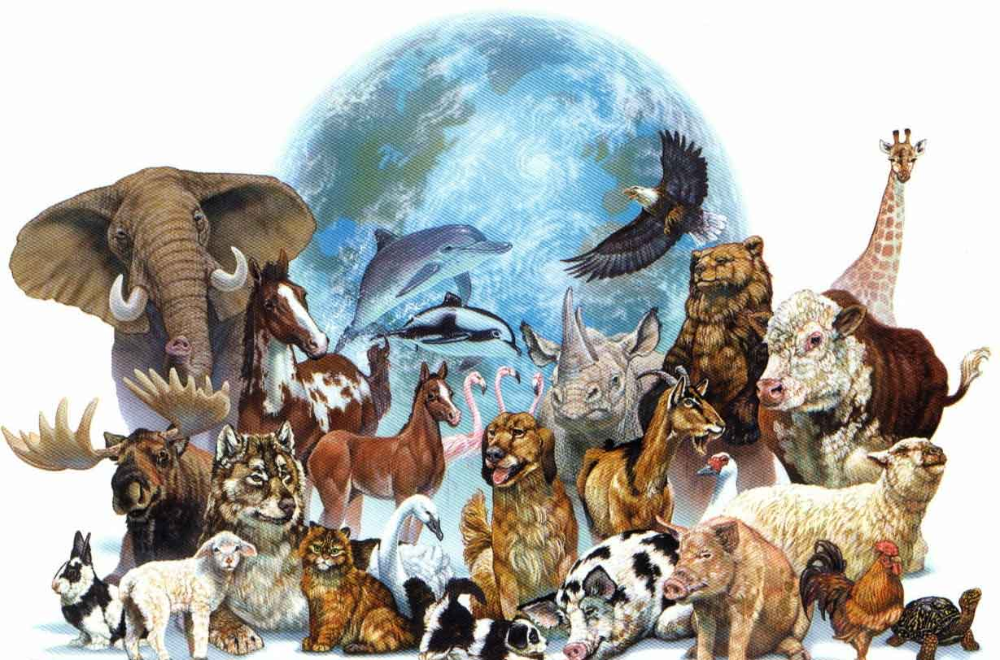
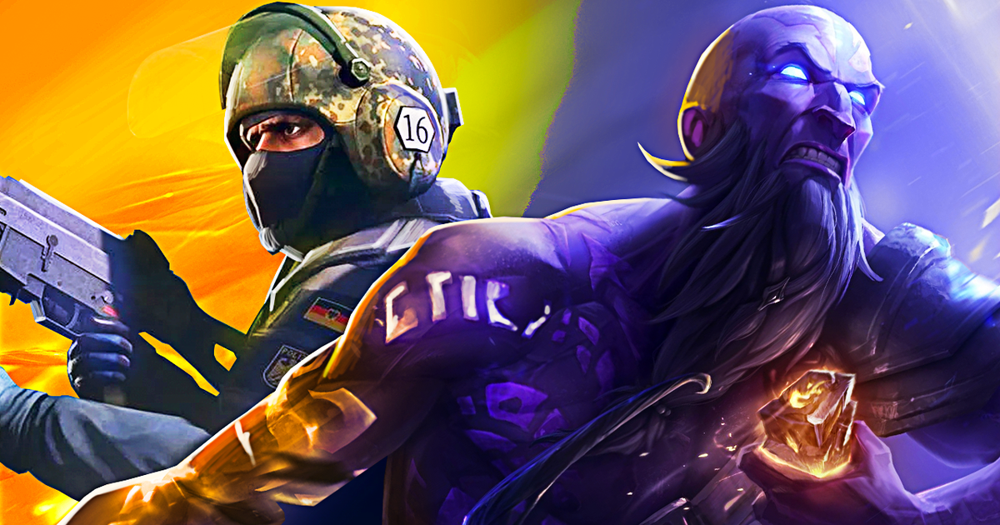

 Animais: Desde pequeno, sempre adorei animais, adorava acompanhar o que os animais do meu jardim faziam e, como cresci vendo minha mãe cuidando do cachorro que ela tinha, creio que me afeiçoei a cachorros em especifico. Porém, desde pequeno eu nunca gostei de ver animais presos, tanto que quando tentaram me dar um casal de Calopsita (eu devia ter em torno de 5 anos) eu acabei soltando elas. Em toda minha vida, eu já tive: Diversos Peixes, 1 Siri (Compramos um aquario daora pra ele), 2 cachorros, alguns pássaros (que caiam de seus ninhos aqui do jardim de casa e agente cuidava até aprenderem a voar) e já ajudei a cuidar de alguns gatos que moraram na minha tia.
 Jogos: Curto jogar no meu tempo livre, e, se tratando de jogos, eu diria que sou bem eclético e que curto um pouco de tudo, desde jogos indie até os mais conhecidos. Atualmente, estou jogando bastante MOBA e FPS (League of Legends e Conter Strike respectivamente) e diria que sou bem melhor nos FPS. Já fiz diversas amizades online e essa é uma das coisas que mais me chama atenção em jogos online, muitas dessas amizades com o tempo acabam, mas é interessante conhecer pessoas de lugares diferentes, tanto que se alguém que estiver lendo quiser me adicionar pra jogar algo, meus nick são: Byg0ne (no Lol) e meu código na Steam é: 360433283.
 Series/Animes: Outra coisa que faço bastante no meu tempo livre é assistir séries, não sou muito fan de séries longas (Tirando "Supernatural" e "Lá Casa de Papel" que logo logo vai ficar gigante também), mas já assisti algumas. No geral me interesso por séries que sejam sobre algo que eu goste, como "O Gambito da Rainha", uma das, se não a melhor miniserie que já assisti. Além de series, também curto algumas coisas da cultura Japonesa, em especial os animes e os mangas (Manhwas também), tentando sempre filtrar levando em conta meu gosto e as críticas. Também tento pegar referências com amigos sobre o que assistir e ler, dando sempre uma olhada antes, para conferir o conteúdo, é claro.
Series/Animes: Outra coisa que faço bastante no meu tempo livre é assistir séries, não sou muito fan de séries longas (Tirando "Supernatural" e "Lá Casa de Papel" que logo logo vai ficar gigante também), mas já assisti algumas. No geral me interesso por séries que sejam sobre algo que eu goste, como "O Gambito da Rainha", uma das, se não a melhor miniserie que já assisti. Além de series, também curto algumas coisas da cultura Japonesa, em especial os animes e os mangas (Manhwas também), tentando sempre filtrar levando em conta meu gosto e as críticas. Também tento pegar referências com amigos sobre o que assistir e ler, dando sempre uma olhada antes, para conferir o conteúdo, é claro.